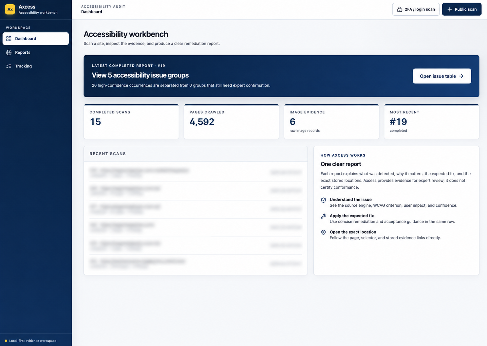

Find the accessibility failures rule engines miss.
Axcess crawls your site, renders every page in a real browser, and runs 7 detection pipelines — a rule engine, behavioural probes, and local AI models — covering 29 of 55 WCAG 2.2 A/AA success criteria. It all runs on your machine. No cloud, no telemetry.
An evidence workbench, not a scorecard
Review grouped issues, follow every claim back to a page and selector, and keep route coverage and click-discovered DOM states visible instead of hiding them behind a single score.

Recent scan targets are intentionally blurred in this product preview.
7 pipelines, one crawl
4 pipelines need only a browser. 3 add a local AI model for the criteria a rule engine can't decide — is this image really text?, does this link make sense out of context?, does the reading order match the visual layout?
-
axe-core
ruleaxe dev API, injected into the rendered DOM
Covers: dozens (1.1.1 presence, 1.3.1, 1.4.3, 2.4.x, 4.1.2, meta-viewport, …)
-
Keyboard-trap probe
ruleDeterministic Playwright (bidirectional Tab/Shift+Tab exit attempts)
Covers: 2.1.2 No Keyboard Trap — conservative review leads
-
Responsive / zoom probe
ruleDeterministic Playwright (viewport mutation + CSS inject)
Covers: 1.4.4 Resize Text, 1.4.10 Reflow, 1.4.12 Text Spacing
-
Focus probe
ruleDeterministic Playwright (focus geometry + tabindex)
Covers: 2.4.11 Focus Not Obscured, 2.4.3 Focus Order (positive tabindex)
-
Image-of-text (VLM)
AIOCR (Tesseract) + VLM via Ollama
Covers: 1.4.5 Images of Text
-
Visual probe
AILive-page screenshot + vision model (1.3.2); runtime media playback measurement (1.4.2, 2.2.2)
Covers: 1.3.2 Meaningful Sequence, 1.4.2 Audio Control, 2.2.2 Pause/Stop/Hide
-
Semantic analyzer
AIPer-SC Text-LLM via Ollama
Covers: 1.2.1 Audio-only transcript cues, 2.4.4 Link Purpose, 2.4.6 Headings and Labels, 3.3.2 Labels or Instructions
Honest about coverage
Axcess never claims coverage it doesn't have. Of all 55 WCAG 2.2 Level A/AA success criteria, it's upfront about exactly which ones it checks for you and which still need a human — and tells you what to test for each. These numbers come straight from the code, so this page, the in-app Tracking view, and the docs can't drift apart.
automated or AI coverage
manual testing (with guidance)
(4 browser · 3 AI)
WCAG 2.2 AAA
What Axcess checks for you
The 29 criteria with automated or AI coverage today, grouped by how Axcess detects them. Generated straight from the code.
Automated 5
- 1.4.4 Resize Text
- 1.4.10 Reflow
- 1.4.12 Text Spacing
- 2.4.2 Page Titled
- 3.1.1 Language of Page
Partly automated 18
- 1.1.1 Non-text Content
- 1.3.1 Info and Relationships
- 1.3.5 Identify Input Purpose
- 1.4.1 Use of Color
- 1.4.2 Audio Control
- 1.4.3 Contrast (Minimum)
- 2.1.1 Keyboard
- 2.1.2 No Keyboard Trap
- 2.2.2 Pause, Stop, Hide
- 2.4.1 Bypass Blocks
- 2.4.3 Focus Order
- 2.4.7 Focus Visible
- 2.4.11 Focus Not Obscured (Minimum)
- 2.5.3 Label in Name
- 2.5.8 Target Size (Minimum)
- 3.1.2 Language of Parts
- 4.1.2 Name, Role, Value
- 4.1.3 Status Messages
AI-assisted 6
- 1.2.1 Audio-only and Video-only (Prerecorded)
- 1.3.2 Meaningful Sequence
- 1.4.5 Images of Text
- 2.4.4 Link Purpose (In Context)
- 2.4.6 Headings and Labels
- 3.3.2 Labels or Instructions
Next up — on the roadmap
- 3.2.3 Consistent Navigation
- 1.2.4 Captions (prerecorded video)
- 3.2.4 Consistent Identification
- 3.2.6 Consistent Help
Every surface — this page, the in-app Tracking view, and the docs — is generated from one source of truth, so the coverage above always matches the code.
How Axcess compares
Rule engines like axe-core, Alfa, and Siteimprove are fast and high-confidence — but they can only check what's mechanically decidable. Axcess runs a rule engine too, then adds behavioural probes and local AI to reach the judgment criteria a rule engine structurally can't. The numbers below count WCAG 2.2 Level A/AA success criteria a tool gives you an automated signal on.
| Tool | Approach | A/AA criteria with a signal | Judgment criteria? |
|---|---|---|---|
| axe-core | DOM rule engine | 21 / 551 | No |
| Alfa (Siteimprove OSS) | ACT-rules engine | not published2 | No |
| Siteimprove | ACT-rules engine | not published3 | No |
| Axcess | Rule engine + 3 behavioural probes + 3 local-AI analyzers | 29 / 55 | Yes |
Axcess's 29 break down as 5 deterministic · 18 partly automated · 6 AI-assisted (leads a human confirms). It runs axe-core as its rule engine, so it covers that deterministic baseline and then reaches criteria no pure rule engine can — “is this image really text?” (1.4.5), “does this link make sense out of context?” (2.4.4), “does the reading order match the layout?” (1.3.2). The trade-off is stated plainly: AI-assisted findings are strong leads, not certainties, so every finding carries a confidence label and 26 criteria are flagged manual-only with guidance.
Sources, June 2026: axe-core 4.12 rule map (21 distinct A/AA criteria, counted from source) · Alfa ACT implementation (40 automated / 54 semi-automated ACT rules) · Siteimprove checks guide. 2,3 Alfa and Siteimprove publish rule counts (and span Level AAA too), not a deduplicated A/AA success-criterion count — so a like-for-like SC number isn't available for them; both share the same structural ceiling as any rule engine.
Up and running in three commands
macOS or Linux · Python 3.11+ · a browser. Ollama is optional — skip it and the browser-only pipelines still run.
# install (uv + chromium + data dirs), then the DB schema make setup && make migrate # crawl a site — renders every page, runs axe + keyboard + responsive uv run audit crawl https://example.com --max-pages 50 # open the review UI (React SPA, audits itself at AAA) make frontend-build && uv run audit serve # → /app/
Built for trust
Private by design
Everything runs locally — the crawler, the browser probes, and the AI models via a loopback Ollama daemon. Your pages and findings never leave the machine.
Eats its own dog food
The review UI is held to WCAG 2.2 AAA, with axe-core tests in the AAA tag pack that fail the build on any violation.
Resumable & deterministic
A queue-driven crawl resumes after a crash. Exports are pinned by golden-file tests, so every change is explicit.
Team-ready
Host it on an always-on machine over your LAN or Tailscale behind an opt-in shared-token gate — without giving up local-first.